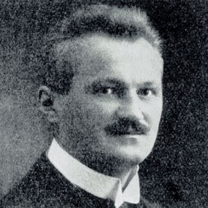

El balonmano, handball o hándbol es un deporte de pelota en el que se enfrentan dos equipos, se caracteriza por transportar la pelota con las manos.
Para establecer los orígenes del balonmano los investigadores tratan de buscar similitudes y puntos de contacto con juegos propios de los griegos y los romanos. Parece lógico pensar que la agilidad del hombre con sus manos pudo llevarle ya en las primeras civilizaciones conocidas a utilizarlas para sus juegos. Sin embargo, el balonmano, tal y como se entiende ahora, es un deporte realmente muy joven, del primer cuarto del siglo XX.
Se considera que el inventor del balonmano moderno fue el profesor alemán de educación física Max Heiser, quien jugaba con sus alumnas de Berlín a un juego que inventó que se llamaba torball (no confundir con el torball actual, para ciegos, que se juega con una pelota que contiene campanillas).
el es Max Heiser, inventor del balonmano.